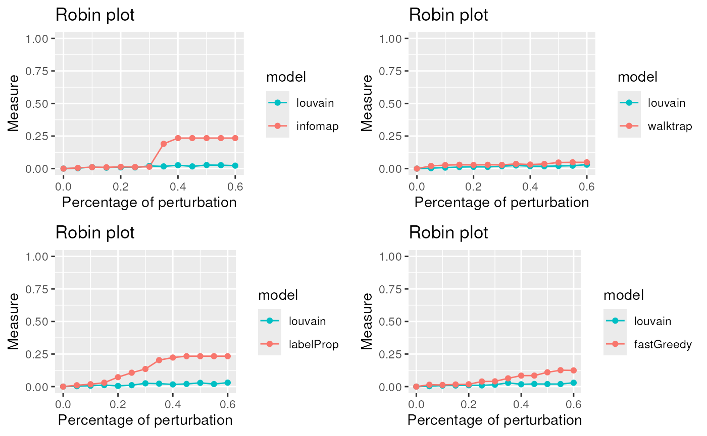
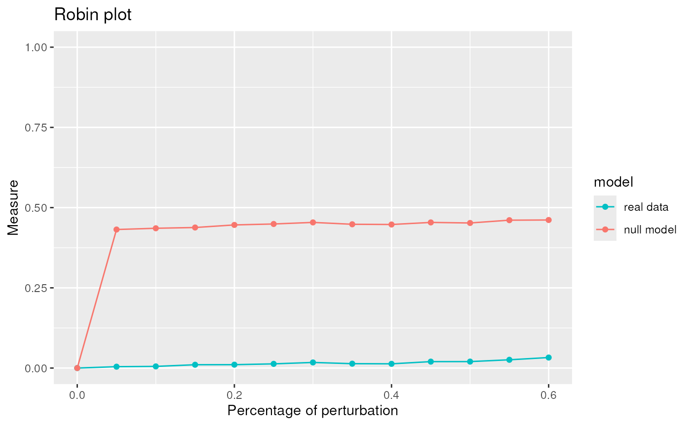
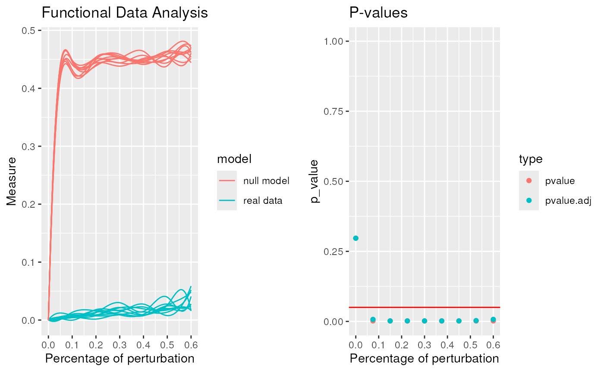

vignettes/RobinSingleCellVignetteNew.Rmd
RobinSingleCellVignetteNew.Rmd
datav2 <- system.file("extdata", "Subsemple1percentemptyDroplets_doublet_filtered_tabulamuris_mtx.rds", package = "scrobinv2")
tabData <- readRDS(datav2)
SingleCellData <- CreateSeuratObject(counts = tabData, project = "singleCell", min.cells = round(dim(tabData)[2]*5/100), min.features = 0)
SingleCellData ## An object of class Seurat
## 8694 features across 532 samples within 1 assay
## Active assay: RNA (8694 features, 0 variable features)
## 1 layer present: counts
SingleCellData <- NormalizeData(SingleCellData, normalization.method = "LogNormalize", scale.factor = 10000)
SingleCellData[["RNA"]]@layers$counts[1:5,1:5]## 5 x 5 sparse Matrix of class "dgCMatrix"
##
## [1,] . . . . .
## [2,] . . 1 . 1
## [3,] . . 1 . 1
## [4,] 1 . 1 . .
## [5,] 1 1 2 . .
SingleCellData <- FindVariableFeatures(object = SingleCellData, selection.method="vst", nfeatures = 2000)
SingleCellData <- ScaleData(SingleCellData, do.center = TRUE, do.scale = TRUE)
SingleCellData[["RNA"]]@layers$scale.data[1:5,1:5]## [,1] [,2] [,3] [,4] [,5]
## [1,] -0.2119967 -0.2119967 -0.2119967 -0.2119967 -0.2119967
## [2,] -0.2464207 -0.2464207 -0.2464207 6.4241312 -0.2464207
## [3,] -0.2325839 -0.2325839 -0.2325839 -0.2325839 -0.2325839
## [4,] -0.3036820 -0.3036820 -0.3036820 -0.3036820 -0.3036820
## [5,] -0.2199427 -0.2199427 -0.2199427 -0.2199427 -0.2199427
SingleCellData <- RunPCA(SingleCellData, features = VariableFeatures(object = SingleCellData))
SingleCellData <- FindNeighbors(SingleCellData, dims = 1:50)
SingleCellData@graphs$RNA_snn[1:5,1:5] # Adjacency matrix## 5 x 5 sparse Matrix of class "dgCMatrix"
## 10X_P4_7_CCTACACGTAAGGATT 10X_P7_6_ACACCGGGTAGCGTGA
## 10X_P4_7_CCTACACGTAAGGATT 1.0000000 0.1428571
## 10X_P7_6_ACACCGGGTAGCGTGA 0.1428571 1.0000000
## 10X_P7_9_TGATTTCAGCAGGTCA . .
## 10X_P8_14_CGAATGTAGAAGGTGA . .
## 10X_P4_6_CGATGGCCATCACAAC . .
## 10X_P7_9_TGATTTCAGCAGGTCA 10X_P8_14_CGAATGTAGAAGGTGA
## 10X_P4_7_CCTACACGTAAGGATT . .
## 10X_P7_6_ACACCGGGTAGCGTGA . .
## 10X_P7_9_TGATTTCAGCAGGTCA 1.0000000 .
## 10X_P8_14_CGAATGTAGAAGGTGA . 1
## 10X_P4_6_CGATGGCCATCACAAC 0.2121212 .
## 10X_P4_6_CGATGGCCATCACAAC
## 10X_P4_7_CCTACACGTAAGGATT .
## 10X_P7_6_ACACCGGGTAGCGTGA .
## 10X_P7_9_TGATTTCAGCAGGTCA 0.2121212
## 10X_P8_14_CGAATGTAGAAGGTGA .
## 10X_P4_6_CGATGGCCATCACAAC 1.0000000
library(robin)
AdjSNN <- SingleCellData@graphs$RNA_snn
graphSingleCell <- graph_from_adjacency_matrix(AdjSNN,mode="directed",weighted = TRUE,add.colnames = "NA",diag=FALSE)
edge <- as_edgelist(graphSingleCell)
graph <- igraph::graph_from_edgelist(edge, directed=FALSE)
graph <- igraph::simplify(graph)
graph## IGRAPH b99442e U--- 532 14421 --
## + edges from b99442e:
## [1] 1-- 2 1-- 8 1-- 13 1-- 14 1-- 17 1-- 27 1-- 42 1-- 63 1-- 65 1-- 71
## [11] 1-- 79 1-- 95 1-- 99 1--102 1--116 1--131 1--132 1--159 1--161 1--164
## [21] 1--172 1--179 1--194 1--197 1--205 1--220 1--258 1--260 1--264 1--267
## [31] 1--270 1--312 1--315 1--325 1--327 1--328 1--351 1--368 1--378 1--386
## [41] 1--391 1--393 1--395 1--397 1--406 1--407 1--409 1--420 1--421 1--426
## [51] 1--427 1--432 1--452 1--458 1--459 1--464 1--472 1--473 1--476 1--478
## [61] 1--495 1--496 1--497 1--501 1--502 1--503 1--510 1--518 2-- 8 2-- 13
## [71] 2-- 14 2-- 27 2-- 42 2-- 63 2-- 65 2-- 71 2-- 79 2-- 95 2-- 99 2--102
## [81] 2--116 2--131 2--132 2--159 2--161 2--164 2--172 2--179 2--194 2--197
## + ... omitted several edgesWe apply the compare procedure to see which is the algorithm that better fits our network.
#Infomap
comp_I <- robinCompare(graph=graph, method1="louvain",
method2="infomap")## [1] "Unweighted Network Parallel Function"
## Detected robin method type independent
## It can take time ... It depends on the size of the network.
plot1 <- plot(comp_I)
#Walktrap
comp_W <- robinCompare(graph=graph, method1="louvain",
method2="walktrap")## [1] "Unweighted Network Parallel Function"
## Detected robin method type independent
## It can take time ... It depends on the size of the network.
plot2 <- plot(comp_W)
#LabelProp
comp_La <- robinCompare(graph=graph, method1="louvain",
method2="labelProp")## [1] "Unweighted Network Parallel Function"
## Detected robin method type independent
## It can take time ... It depends on the size of the network.
plot3 <- plot(comp_La)
#Fastgreedy
comp_F <- robinCompare(graph=graph, method1="louvain",
method2="fastGreedy")## [1] "Unweighted Network Parallel Function"
## Detected robin method type independent
## It can take time ... It depends on the size of the network.
plot4 <- plot(comp_F)
PlotComparisonAllVsInfomap <- gridExtra::grid.arrange(plot1,plot2,plot3,plot4, ncol=2)
The lowest curve is the most stable algorithm. Louvain and Walktrap are the best algorithms in our example.
Due to the fact that Louvain is one of the best algorithm for our network we apply the robust procedure with the Louvain algorithm to see if the communities detected are statistically significant.
graphRandom <- random(graph=graph)
proc <- robinRobust(graph=graph, graphRandom=graphRandom, method="louvain")## [1] "Unweighted Network Parallel Function"
## Detected robin method type independent
## It can take time ... It depends on the size of the network.
plot(proc)
robinFDATest(proc)## [1] "First step: basis expansion"
## Swapping 'y' and 'argvals', because 'y' is simpler,
## and 'argvals' should be; now dim(argvals) = 13 ; dim(y) = 13 x 20
## [1] "Second step: joint univariate tests"
## [1] "Third step: interval-wise combination and correction"
## [1] "creating the p-value matrix: end of row 2 out of 9"
## [1] "creating the p-value matrix: end of row 3 out of 9"
## [1] "creating the p-value matrix: end of row 4 out of 9"
## [1] "creating the p-value matrix: end of row 5 out of 9"
## [1] "creating the p-value matrix: end of row 6 out of 9"
## [1] "creating the p-value matrix: end of row 7 out of 9"
## [1] "creating the p-value matrix: end of row 8 out of 9"
## [1] "creating the p-value matrix: end of row 9 out of 9"
## [1] "Interval Testing Procedure completed"
## TableGrob (1 x 2) "arrange": 2 grobs
## z cells name grob
## 1 1 (1-1,1-1) arrange gtable[layout]
## 2 2 (1-1,2-2) arrange gtable[layout]## $adj.pvalue
## [1] 0.2969 0.0071 0.0017 0.0017 0.0017 0.0017 0.0017 0.0028 0.0072
##
## $pvalues
## [1] 0.2969 0.0017 0.0017 0.0017 0.0017 0.0017 0.0017 0.0017 0.0017
robinGPTest(proc)## Profile 1
## Profile 2## [1] 86.14652The communities given by Louvain are statistically significant.